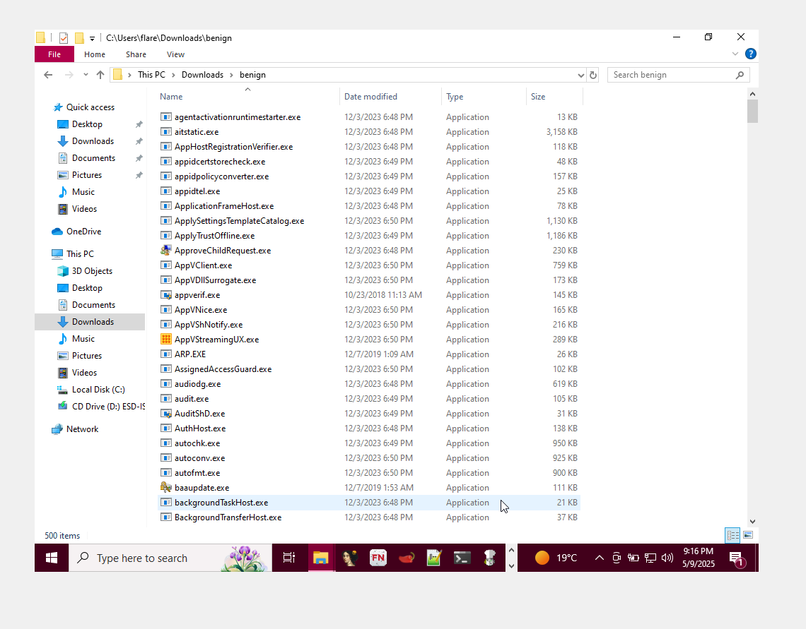
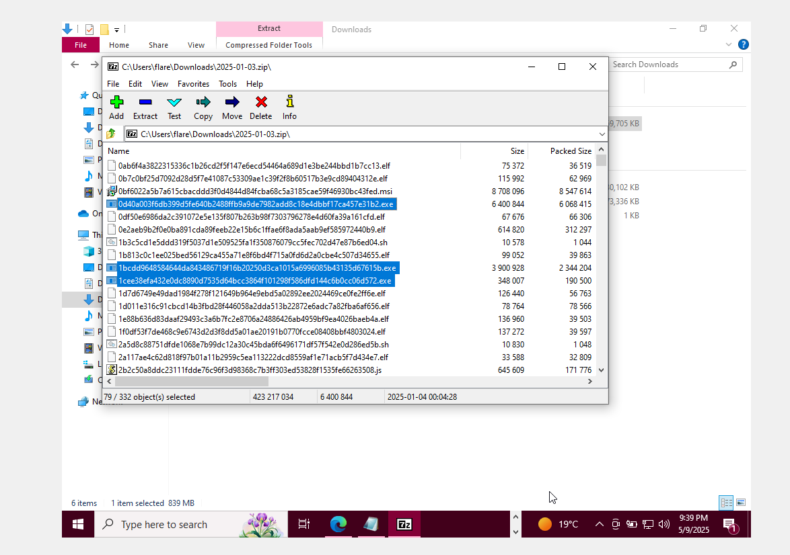

Flare VM is the most popular tool
(or, rather, suite of tools) for Malware Analysis. The following
guides [1, 2] were
followed to the letter to prepare the analysis environment (a Windows 10 VM). Sophisticated malware
has the ability to detect virtualized and sandboxed environments. Hence my first step should be to
make the
Flare VM seem like a normal machine than a VM. To achieve this, I just downloaded random
applications, as well as created and populated random directories with sample documents. This can be
seen in Figure 1. I also
wanted to customize the wallpaper, but the option is disabled. I also increased the number of
processors to 4 and memory to 8GB in case there are malware that take them into account.
Collecting Benign and Malicious Samples
Benign executables were sourced from the Windows VM in a state prior to having any malware
installed. PowerShell was used to automate this:
i.e., get all files that contain the .exe extension, recusively, then pick and copy 500 random
samples into a folder.

Figure 2: some benign samples.
Malicious samples were sources from online malware repositories and databases, namely GitHub (shocking!) and
MalwareBazaar🔗. Obviously not all executables are guaranteed to run, namely due to software architecture and
OS compatibility. Hence, this project's scope is limited to DOS MZ (.exe) executables aimed at Windows machines.

Figure 3: combing through malware packages for .exe executables.
Feature Extraction: Static Features
Given an executable, without running it, the program can ba analyzed based on its static features; i.e.,
features that can observed directly from the file. For example, if a program claims to be a simple single-player game,
and it requires cryptographic and networking functions (as declared among its imported libaries), then it is a cause for concern.
For each and every executable, we extract its imported libraries, number of
sections (and existence of non-standard sections), entropy (randomness), and determine whether or not it is packed (i.e., if it contains
artifacts from known packers).
Feature Extraction: Dynamic Features (+ running malware!)
Now for the fun part. Static features are one thing, but what is most telling is revealed when you actually run the executable. The answer to
how we map and measure dynamic (i.e., runtime) features is to track what specific API functions are being calle upon startup. For example, say two programs, one benign and the
other malicious, requires time functionalities. However, on startup, one of them is set to wait for 10 seconds before fully executing - this is a common evasion tactic.